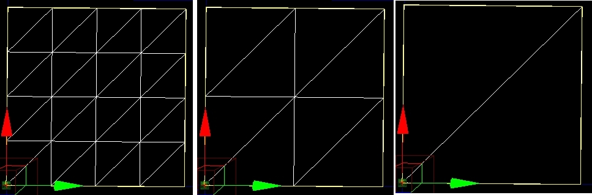

UDN
Search public documentation:
UsingTerrainCH
English Translation
日本語訳
한국어
Interested in the Unreal Engine?
Visit the Unreal Technology site.
Looking for jobs and company info?
Check out the Epic games site.
Questions about support via UDN?
Contact the UDN Staff
日本語訳
한국어
Interested in the Unreal Engine?
Visit the Unreal Technology site.
Looking for jobs and company info?
Check out the Epic games site.
Questions about support via UDN?
Contact the UDN Staff
使用地形
概述
地形属性

地形
NumPatchesX（X方向块数量）和NumPatchesY（Y方向块数量）
NumPatchesX决定了地形的一个单独的行中包含的patches(块/四边形)的数量。NumPatchesY决定了地形的单独的一列中包含的块的数量。 注意，如果您使得这些维度变小，它将会破坏 高度图/alpha贴图 以及这些块不再使用的其它数据。如果您增加维度，它将会简单地将新的 高度图/alpha贴图以及其它数据填充为0。 地形的总大小有以下公式决定： SizeX = NumPatchesX * DrawScale * DrawScale3D.X SizeY = NumPatchesY * DrawScale * DrawScale3D.YMaxTesselationLevel（最大多边形细分水平）
这是在进行详细细分时，可以浓缩成一个单独的块的最大块数量(行和列)。这个值必须是2的幂数，1 <= MaxTesselationLevel <= 16。 注意这意味着，NumPatchesX 和 NumPatchesY所使用的值必须是MaxTesselationLevel的倍数。 在这个实例中，以下的截图显示了一个NumPatchesX为4、NumPatchesY为4、且可能的3个多边形细分水平中的每一个的MaxTesselationLevel都为4。最左边是具有全部细节的情形，出现了由块组成的4x4网格。中间的图片是具有一半细节的情形，显示了由块组成的2x2的网格。最右边的图片的细节级别最低，仅用一个独立的正方形覆盖了原来的区域。
MinTessellationLevel(最小多边形细分水平)
在进行详细细分时，可以浓缩成一个正方形的‘子方块’（行和列）的最小数量。注意，如果这个值和MaxTesselationLevel相等，地形将不会细分出任何细节。MaxComponentSize(最大组件尺寸)
对于引擎来说，地形被分割为由块组成的称为地形组件的矩形组来进行渲染。MaxComponentSize(最大组件尺寸)是地形组件的每行/列中的完全反细分后的正方形最大数量。(地形组件中每 行/列 在完全细分情况下的物理块的最大数量是这个值乘以MaxTesselationLevel的值的积。 一般，所有的组件都是由尺寸为MaxComponentSize的小方块组成的正方形，但是当组成地形的块的分辨率不是MaxComponentSize的方块的倍数时，地形的边缘的某些组件看少去较小。 通过限制MaxTesselationLevel的值来防止一个完全细分组件的顶点缓冲>65536个顶点。 如果MaxTesselationLevel 为16，MaxComponentSize 限制为<=14。如果MaxTesselationLevel 为8，MaxComponentSize 限制为<=30。
每个地形组件都是一个不同的DrawMesh调用函数。根据所应用的材质的复杂度不同，该复杂度是地形的块所应用的层以及渲染的细分水平的复杂度的和，组件具有不同的性能消耗。 如果有一个特殊的层被应用到一个地形组件的，其它的组件将没有针对该层的性能消耗。注意，当一个层 ‘渗入’到它的邻接组件时在某种程度上是很难发现的。通过地形浏览器或属性窗口显示的高亮选中的覆盖图对于定位这种情况可能是有帮助的。 Viewing MaxComponentSize(查看最大组件尺寸): 要想查看地形组件的尺寸，请选中在视口的Show Flags(显示标志)菜单中的标志 -“Terrain Patches(地形块)”。当启用这项时，地形将会在地形中的每个组件周围描画黄色的盒子。 MaxComponentSize(最大组件尺寸)指出了一个地形的UTerrainComponent实例中所包含的方块的数量 – 数值越大，组成地形的'子快'越少。 组件的数量由以下函数决定： NumSectionsX = ((NumPatchesX / MaxTesselationLevel) + MaxComponentSize - 1) / MaxComponentSize NumSectionsY = ((NumPatchesY / MaxTesselationLevel) + MaxComponentSize - 1) / MaxComponentSize